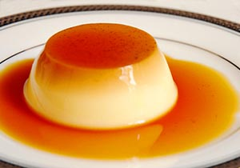
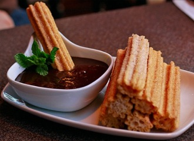

Flan, sopapillas, and fried ice cream are the most common Mexican desserts found on menus in the United States.The range of Mexican desserts in Mexico,however, is much larger.
The Dessert I Recomend

Spanish Flan
Ingredients
1 cup of white sugar
3 eggs
1(14 ounce) can of sweetened condensed milk
1(12 fluid ounce) can of evaporated milk
1 tablespoon of vanilla extarct
Directions
Preheat oven to 350 degrees F (175 degrees C).
In a medium saucepan over medium-low heat, melt sugar until liquefied and golden in color. Carefully pour hot syrup into a 9-inch round glass baking dish, turning the dish to evenly coat the bottom and sides. Set aside.
In a large bowl, beat eggs. Beat in condensed milk, evaporate milk and vanilla until smooth. Pour egg mixture into baking dish. Cover with aluminum foil.
Bake in preheated oven for 60 minutes. Let cool completely.5th: To serve, carefully invert on serving plate with edges when completely cool.

Churros
Ingrediants
1 cup of water
2 1/2 tablespoons of white sugar
1/2 of teaspoon of salt
2 tablespoons of vegetable oil
1 cup of all-purpose flour
2 quarts of oil for frying
1/2 cup of white sugar, or to taste
1 teaspoon of ground cinnamon
Directions
In a small saucepan over medium heat, combine water, 2 1/2 tablespoons sugar, salt and 2 tablespoons vegetable oil. Bring to a boil and remove from heat. Stir in flour until mixture forms a ball.
Heat oil for frying in deep-fryer or deep skillet to 375 degrees F (190 degrees C). Pipe strips of dough into hot oil using a pastry bag. Fry until golden; drain on paper towels.
Combine 1/2 cup sugar and cinnamon. Roll drained churros in cinnamon and sugar mixture.